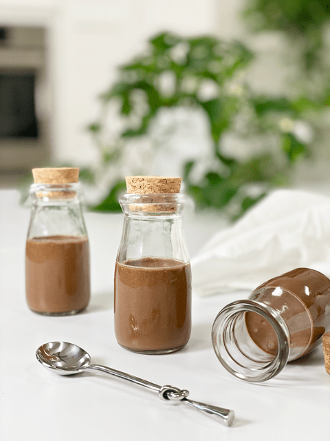

Velvet Chocolate Mousse
Ever have one of those days where you just can’t handle one more thing on your plate? Feeling overwhelmed? Stressed? Low energy? Is there a rain cloud over your head… if any of these symptoms speak out to you, this dessert is something that you must keep on hand. Just a few spoonfuls a day will surge your body with healthy endorphins, which are bound to pick up your spirits.
Studies have shown that fats and sugars are dietary triggers that directly lead to the release of endorphins. Desserts are perhaps the highest contributor to fat and sugar in a meal. So taking a few bites of this dessert will send an instant message to your brain for the release of endorphins, giving you that moment of euphoria and who doesn’t want that?!
Though desserts can definitely give you instant gratification, I am not really suggesting that eating high-fat desserts is the key to a healthy diet. It is all about moderation. I wrote an article and posted it in the
Reference Library called, “
Are Raw Desserts Healthy for You.” It’s a quick read and you might find it helpful.
This mousse is rich, creamy, and very thick (especially once chilled). I have served it alone, so one can marvel at its richness and I have served with fresh mash berries. Either way, you can’t go wrong. The main thing that I want to point out is to sever it in small individual portions. A little goes a long way. You can also freeze the mousse making it a great staple to have on hand for gatherings. I hope you enjoy the recipe. blessings, amie sue

Ingredients:
yields 2 1/4 cups
- 3/4 cup (158 g) raw coconut milk or canned (BPA free)
- 1/2 cup (104 g) coconut oil, melted
- 1/4 cup (89 g) raw honey
- 10 drops liquid stevia
- 2 tsp (10 g) vanilla extract
- 1/2 cup (76 g) raw cashews, soaked 2+ hours
- 6 Tbsp (35 g) raw cacao powder
- dash Himalayan pink salt
Preparation:
- Place the ingredients into a high-powered blender in the following order; coconut milk, coconut oil, honey, stevia, vanilla, cashews, cacao powder, and salt. Blend until creamy. If you feel any grit, continue blending till completely smooth. By placing the wet ingredients into the blender first, it will help the blades move more freely.
- Taste test and see if you desire more sweetener.
- The mousse will be very runny after blending. Pour into serving bowls and place in the fridge to firm up; this will take 1+ hours.
- The mousse should keep for 3-4 days in a sealed container in the fridge and several weeks in the freezer.
© AmieSue.com